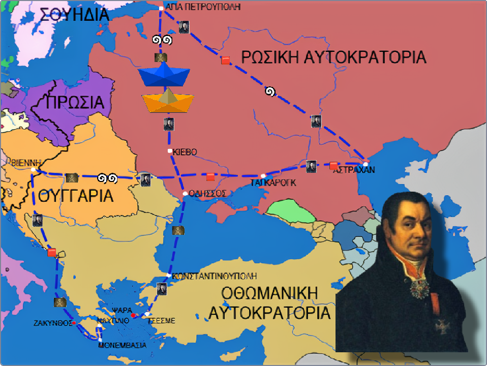

Ιωάννης Βαρβάκης 2021
Ιωάννης Βαρβάκης 2021,
Ένα παιχνίδι Ιστορίας.
Το παιχνίδι «Ιωάννης Βαρβάκης 2021» αποτελεί μεταγραφή του επιτραπέζιου εκπαιδευτικού παιχνιδιού «Στα ίχνη του Ιωάννη Βαρβάκη» που δημιουργήθηκε από μαθητές στον Όμιλο Ιστορίας του Βαρβακείου Προτύπου Γυμνασίου το 2018. Αφορά στη ζωή και το έργο του εθνικού ευεργέτη Ιωάννη Βαρβάκη (1745-1825) και την εποχή κατά την οποία έζησε (τέλη 18ου-αρχές 19ου αι.).
